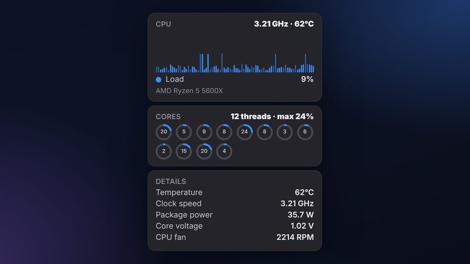
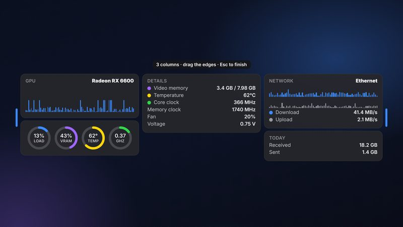

Everything your PC is doing, at a glance.
Real readings from your hardware, drawn in a design you will actually want on your desktop.
CPU, down to every thread
Per-thread load, effective clock, real temperature, package power, core voltage and fan speed — on Intel and AMD, desktop and laptop.

GPU & hot spot
Load, VRAM, core and hot-spot temperature, clocks and fan. Picks the right GPU on hybrid laptops.
Memory & top apps
In use, available, committed — and the apps using the most memory, up to 30.
Every sensor
All motherboard temperatures and fans in one tidy list.
Network & storage
Live download / upload, adapters, today's totals, drive capacity and activity.
Responsive widgets
Drag a widget wider and its cards flow into two or three columns, with balanced heights. Make it as compact or as roomy as you like.

Weather & air quality
Conditions, rain chance, wind, AQI, hourly and daily forecast. Type "kar" and pick Karachi from the list.
Dark & light, per widget
Choose a theme for each widget, fade only the background, hide the frame — and text contrast adapts to any wallpaper automatically.
Any monitor
Float widgets on any screen or dock a sidebar to the edge. Screens are named by position and model — never confusing numbers.
It remembers
Your widgets and settings survive every update and reinstall.
Private
No account, no analytics. Hardware data never leaves your PC.
Light & quiet
Low idle CPU, lives in the tray, starts with Windows.
See it in action.
Up and running in a minute.
Install
Download the setup from the latest release and run it. It installs the sensor driver for you.
Add widgets
Right-click the tray icon → Add widget. Drag them anywhere, or choose Switch to Sidebar.
Make it yours
Right-click a widget for theme, opacity, size and settings. DeskStats remembers everything.
Questions, answered.
Is DeskStats free?
Yes. It is free and open source under the GPLv3 license.
Why does it need administrator rights?
Windows only allows apps to read hardware sensors, such as CPU temperature, with elevated rights. The installer also installs the free, signed PawnIO driver (if it is not already there) that DeskStats uses to read CPU sensors. Both are used only to read sensors.
Does it collect my data?
No. There is no account, no analytics and no ads. Your hardware readings never leave your PC. The only internet requests are the optional Weather widget (city search, forecast, air quality from Open-Meteo) and the optional public-IP lookup. Read the privacy policy.
Will my widgets survive an update?
Yes. Your widgets, positions and settings are stored in %LocalAppData%\DeskStats, which the installer and uninstaller never touch. A backup is also made before a new version first runs.
My antivirus flags it. Is it safe?
DeskStats reads sensors through LibreHardwareMonitor and the PawnIO driver, like other well-known hardware monitors. Some antivirus programs are cautious about anything that talks to a hardware driver; you can add an exclusion for the install folder and report a false positive to the vendor.
Which Windows versions are supported?
Windows 10 (version 2004) and Windows 11, 64-bit. You do not need to install .NET.
How is this related to Sidebar Diagnostics?
DeskStats is a new version of the idea behind Sidebar Diagnostics, rebuilt on .NET 8 as a widget platform. It adapts parts of Sidebar Diagnostics' logic (GPLv3) and credits it — see below. It is not affiliated with the original project or its author.
Free to use. Honest about its roots.
DeskStats is licensed under the GNU GPL v3 — not MIT — because it builds on Sidebar Diagnostics, which is GPLv3 too.
What the license means
- ✓ Use it for free, at home or at work.
- ✓ Read, study and modify the source code.
- ✓ Share it — with the source, under GPLv3, with credits kept and changes marked.
- ✕ Make it closed-source, re-license it as MIT, or remove the credits.
- ✕ Use the DeskStats name, logo or icon for a fork or another product.
Credits & lineage
Built with the help of open-source projects: